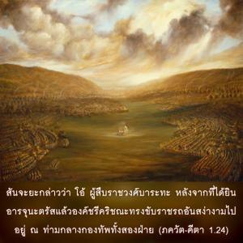

สญฺชย กล่าวว่า โอ้ ผู้สืบราชวงศ์ ภรต หลังจากที่ได้ยิน อรฺชุน ตรัสแล้วองค์ศรีกฺฤษฺณทรงขับราชรถอันสง่างามไปอยู่ท่ามกลางกองทัพทั้งสองฝ่าย

โศลกนี้ได้กล่าวถึง อรฺชุน ว่าเป็น คุฑาเกศ คุฑากา หมายถึงการนอนหลับ และผู้ที่ชนะการนอนเรียกว่า คุฑาเกศ การนอนหมายถึงอวิชชา ดังนั้น อรฺชุน ทรงเอาชนะทั้งการนอน และอวิชชา เพราะเนื่องจากมิตรภาพของพระองค์ที่มีต่อองค์กฺฤษฺณ ในฐานะที่เป็นสาวกชั้นเยี่ยมนั้น อรฺชุน ทรงไม่สามารถลืมองค์กฺฤษฺ ได้แม้แต่เสี้ยววินาทีเดียว เพราะนี่เป็นธรรมชาติของสาวก ไม่ว่าในยามตื่นหรือยามหลับสาวกขององค์ภควานฺจะไม่สามารถว่างเว้นจากการระลึกถึงพระนาม รูปลักษณ์ คุณสมบัติ และลีลาขององค์กฺฤษฺณได้เลย ดังนั้นสาวกขององค์กฺฤษฺณจึงสามารถเอาชนะทั้งการนอน และอวิชชาได้ด้วยการระลึกถึงองค์กฺฤษฺณอยู่เสมอ เช่นนี้เรียกว่ากฺฤษฺณจิตสำนึกหรือ สมาธิ ในฐานะที่เป็น หฺฤษีเกศ หรือผู้กำกับประสาทสัมผัสและจิตใจของทุกๆชีวิต ศฺรีกฺฤษฺณทรงเข้าใจจุดมุ่งหมายของ อรฺชุน ที่ทรงให้นำราชรถไปยังท่ามกลางกองทัพทั้งสอง พระองค์ทรงปฏิบัติตามและตรัสดังต่อไปนี้